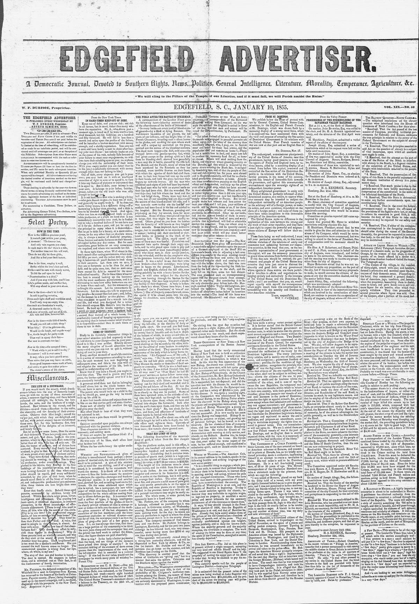

The treaty embraces a thirty articles, and is merely one of
https://www.loc.gov/resource/sn84026897/1855-01-10/ed-1/?sp=1

See the original pageVer la página original
Based on the provided excerpt, the newspaper reported that the Dominican legislature prevented the ratification of a thirty-article treaty of amity, commerce, and navigation due to concerns that a clause regarding the legal rights of mulatto citizens was too vague, while the U.S. commissioner refused a proposed amendment. Additionally, the excerpt noted the presence of four French warships in the port of St. Domingo and the expected arrival of an English fleet supposedly to prevent the treaty's final ratification.
A partir del fragmento publicado, el rotativo informó que el Congreso dominicano frenó la ratificación de un tratado de treinta artículos de amistad, comercio y navegación por juzgar ambigua una cláusula sobre los derechos civiles de los ciudadanos mulatos, habiendo rehusado el comisionado estadounidense la enmienda propuesta. Se reseñaba asimismo la permanencia de cuatro buques de guerra franceses en el puerto de Santo Domingo y la inminente llegada de una escuadra británica con el fin aparente de impedir la convalidación definitiva del pacto.
Where this standsEn qué punto está
The full text of this article is still being prepared. Until it is ready, this page carries a summary, the passage found on the page, and the link to the original, which is always one click away.El texto completo de este artículo aún se está preparando. Hasta que esté listo, esta página lleva un resumen, el pasaje encontrado en la página y el enlace al original, que siempre está a un clic.
The passage this summary was written fromEl pasaje del que se escribió este resumen
The passage where this article was found, copied from the newspaper page itself, reading errors and all. This is exactly what the summary above is based on.El pasaje donde se encontró este artículo, copiado de la propia página del periódico, con sus errores de lectura y todo. Esto es exactamente aquello en lo que se basa el resumen de arriba.
prevented the ratification of the treaty by the E
Dominican legislature. The treaty embraces a
thirty articles, and is merely one of amity, com- c
mere, and navigation guarantees freedom of n
science; provides for the rendition of fugi- L
rom justice; recognizes the principle that n
e of war the flag covers the goods de- g
ares that citizens of the one republic, residing
in the other, shall not be subject to military ser- it
vice; allows the citizens of the one to pass
trough, or reside and do business within thet
erritory of the other, and in case of w-ar be
ween the two Republics, the temporary resi- a
:ents to have six months within which to return C
to their own country, with their goods and mer- a
:handise gives free access to our vessels of .war
and mail steamers in the ports of Dominica; i
oncedes the right to appoint consuls, &c., at all t
ports except where their admission and residence
may not appear convenient; and guarantees to
itizens of Dominica (nearly all of them mulat- 1
toes) the legal (not political) rights of citizens; p
but this clause the Dominican Legislature deems o
too vague and equivocal to secure the end it
meditates, and proposes an amendment, accor
ding to mulattoes expressly the rights thus as
ired in general terms. This our commission- a
er will not agree to. We see it stated there are
now four French vessels of war in the port of
St. Domingo, and an English fleet is snuortly I
expected there, with the view, it is supposed, of
preventing the final ratification of the treaty."
How to cite this articleCómo citar este artículo
Edgefield Advertiser. (1855). Edgefield, S.C., January 10, 185510 de enero de 1855. DR in the American PressRD en la Prensa Norteamericana. Library of Congress, Chronicling America: https://www.loc.gov/resource/sn84026897/1855-01-10/ed-1/?sp=1
ReferencesReferencias
Library of Congress, Chronicling America: Edgefield Advertiser, January 10, 185510 de enero de 1855.
Send an observationEnviar una observación
Does this article connect with your family, your town, or something you know? Did we get something wrong? Write to us. Observations go to the editor's inbox and are read by a person.¿Este artículo conecta con su familia, su pueblo o algo que usted conoce? ¿Nos equivocamos en algo? Escríbanos. Las observaciones llegan al buzón del editor y las lee una persona.
Send observationEnviar observación